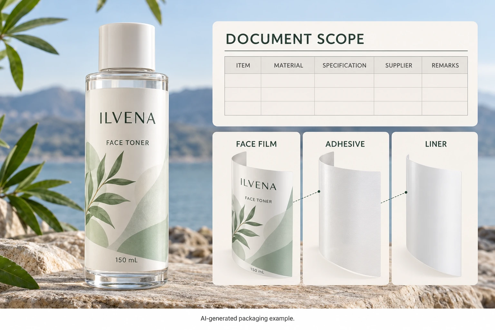

Ask which component contains the content
Name the actual film and supplier reference. Ask whether the statement concerns the face material, another component or a specifically defined construction. Obtain the stated basis rather than deciding what the percentage probably means from a product name.
Avery Dennison's recycled-content portfolio separately lists products such as recycled film and recycled liner options. That organization illustrates why component identity matters; it does not confirm a percentage or product availability for your cosmetic-label order.
The release liner is normally removed during label application. A statement about that supplied component should not silently become a statement about material remaining on the consumer's bottle. Conversely, content in a face film does not establish the composition of the discarded backing.
Preserve the supplier's exact basis
Ask the supplier to explain the content category, calculation or accounting basis and applicable product documentation. Do not rewrite an unfamiliar claim as mechanically recycled, post-consumer or physically present content without its support.
Keep any certification, chain or transaction reference within its own scope. A logo on a brochure is not evidence for every product in the portfolio. Where specialist verification or authorized wording is needed, route the question to the appropriate material and brand reviewers.
This guide supplies no environmental-label permission or market-specific claim rule. Its practical purpose is to prevent purchasing from losing the original component and evidence boundary before the responsible review occurs.
Connect the evidence to the actual supply
Record the proposed product code and construction revision in the quotation. Ask how the relevant material statement will be connected to the supplied order and what documentation is available. A development sample made from another film should remain identifiable as such.
If the supplier changes the film, ask whether the earlier content evidence remains applicable. An unchanged printed design does not establish unchanged material composition. Likewise, a current material statement does not establish adhesion, appearance or application compatibility on the intended bottle.
The caliper and basis-weight guide helps distinguish component measurements. Use the appropriate layer identity here too, while keeping recycled-content evidence separate from a thickness comparison.
Keep any derived calculation transparent
If a project needs a figure for a larger defined construction, have the relevant technical owner obtain the necessary component masses and content data. A face-film percentage cannot simply be applied to the total label or bottle mass. Do not average component percentages without their appropriate mass basis.
Unknown adhesive, ink or finish inputs should remain unknown. Rounding a partial calculation into a precise finished-pack statement makes the result look more established than it is. Ask whether the intended wording can be supported within a narrower component boundary instead.
The brand's responsible reviewer should assess the final statement and intended markets. An internal procurement estimate and a public environmental claim have different jobs; keep their status visible in the release record.
| Record | Input required | Hold point |
|---|---|---|
| Component | Face film or other named material | Statement only says recycled label |
| Identity | Supplier code and current document | Evidence concerns another product |
| Content basis | Exact category, denominator and method | Broad wording changes the original meaning |
| Supply link | Quote/order reference and available documentation | Generic portfolio page is the only support |
| Other layers | Included and excluded components | Film figure is extended to the entire pack |
| Derived figure | Mass inputs, method and technical review | Required inputs are missing |
| Artwork | Proposed wording and responsible acceptance | Claim exceeds the verified boundary |
| Change control | Affected material and evidence update | Old statement follows a substituted film |
Work from component identity to evidence and supply link. Review any broader calculation only after its inputs are available. Hold the wording when its boundary cannot be supported; material sampling can continue under an explicitly unresolved claim status.

Give material choice and public wording separate decisions
A hypothetical brand can request an identified recycled-content film for physical evaluation while the claim review remains open. That separates a useful material investigation from a promise the artwork cannot yet support.
Another project may have the exact material evidence and a reviewed component-specific statement. It should preserve that wording and supply connection through the order rather than broadening it casually in sales copy. Neither case establishes recyclability, lower overall impact or suitability for a particular formula.
The FSC paper claim guide addresses a different evidence system and material. Its certificate and artwork route should not be copied as the procedure for a film-content statement.
For custom cosmetic labels, provide the bottle, artwork, quantity and exact component/content requirement. Ask what documented material options can be reviewed. Use the inquiry form to prepare a message, then send the source statement and proposed wording by email or WhatsApp. Keep the original denominator with the claim until the responsible reviewer has accepted the final boundary.